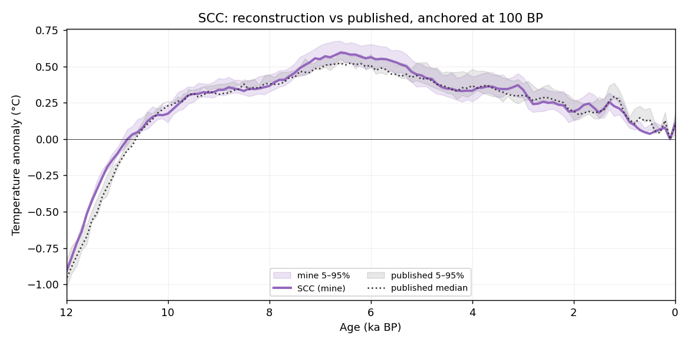
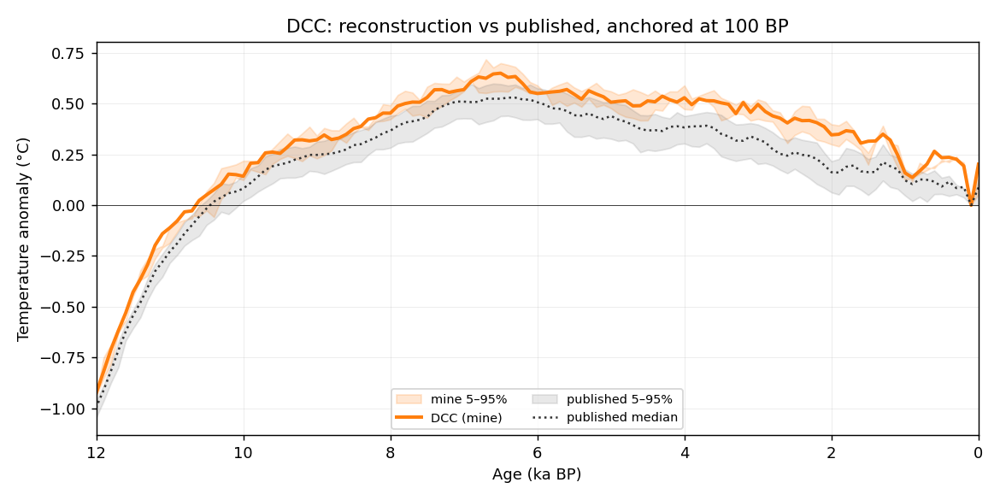
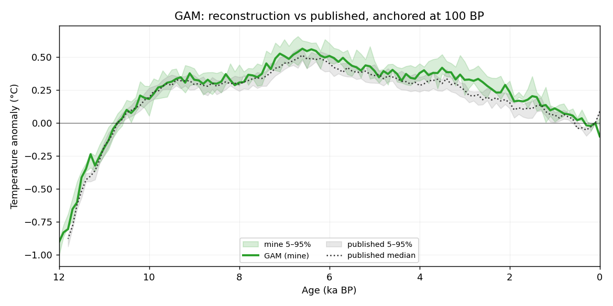
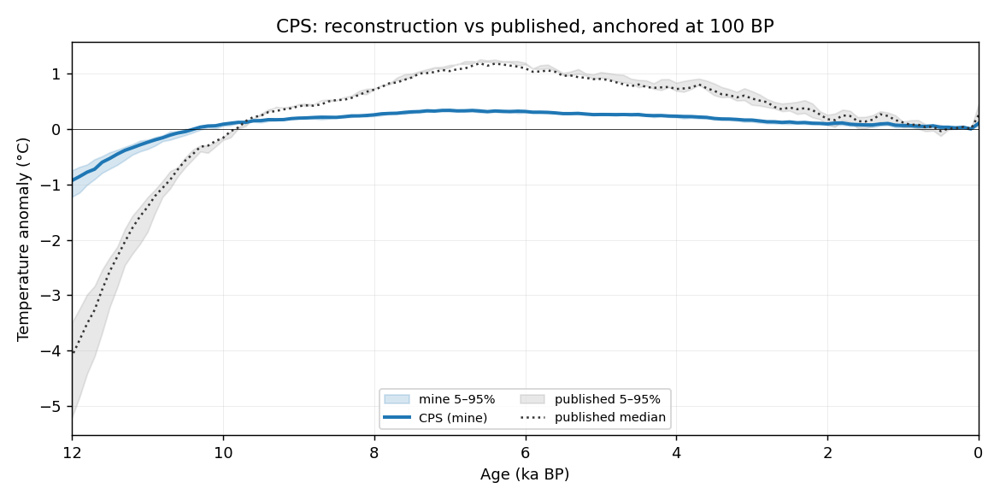
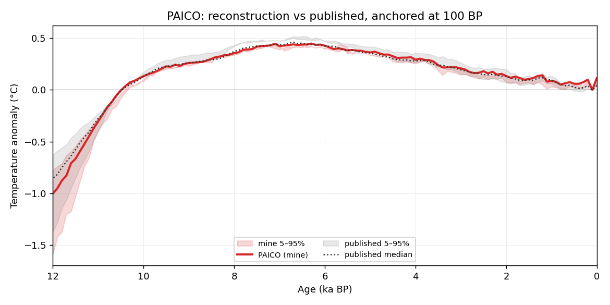
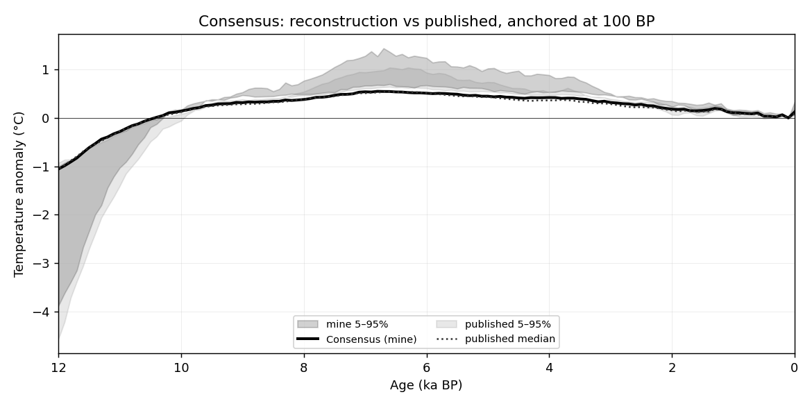
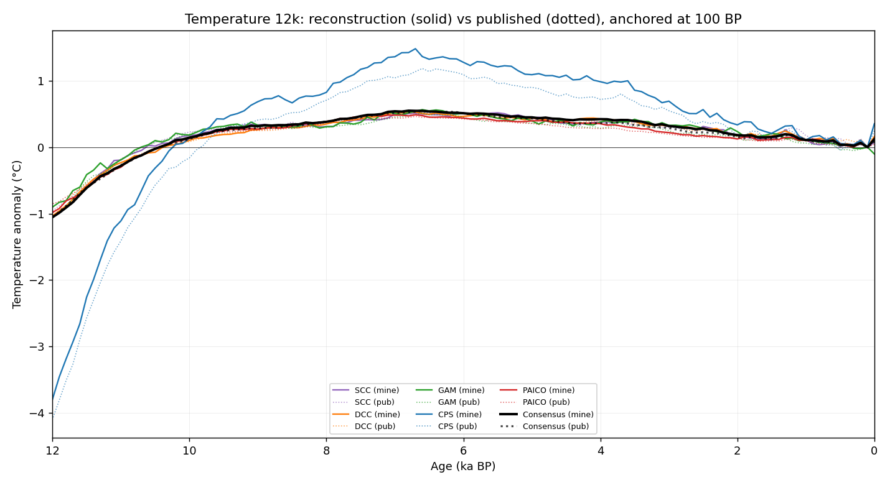

Validation of this multi-method composite reconstruction against the
published Kaufman et al. (2020) Temperature 12k curves
(doi:10.1038/s41597-020-0530-7),
bundled from the NOAA archive under reference_data/published/.
Both curves are anchored to 0 at 100 yr BP (NOAA archival convention) and
metrics computed on absolute anomalies so amplitude and offset
errors are visible — unlike r/CE on recentered series, which hide them.
Per-method and consensus comparison against the published curves. Both
anchored to 0 at 100 yr BP. n pts ages 0–12 ka common to both.
r: Pearson correlation of anchored medians.
bias / RMSE / maxΔ: of (mine − published), °C.
amp: std(mine)/std(pub) — 1.0 = matched amplitude.
midHol: mean over 5.5–6.5 ka — mine | published | paper Table 1.
12 ka: mean over 11.5–12 ka — mine | published.
spread: mean(q95−q05) mine/published — 1.0 = matched uncertainty.
flat: longest run of identical consecutive median values (clipping flag).
| Method | r | bias | RMSE | maxΔ | amp | midHol (m | p | T1) | 12 ka (m | p) | spread | flat |
|---|---|---|---|---|---|---|---|---|---|
| SCC | 0.992 | -0.014 | 0.044 | 0.126 | 1.05 | 0.50 | 0.49 | 0.50 | -0.84 | -0.77 | 0.86 | 1 |
| DCC | 0.997 | -0.002 | 0.028 | 0.074 | 1.03 | 0.48 | 0.50 | 0.50 | -0.82 | -0.77 | 0.98 | 1 |
| GAM | 0.985 | +0.044 | 0.061 | 0.189 | 1.14 | 0.50 | 0.45 | 0.44 | -0.70 | -0.70 | 0.98 | 1 |
| CPS | 0.997 | +0.204 | 0.222 | 0.375 | 0.98 | 1.29 | 1.09 | 1.08 | -3.05 | -3.36 | 0.95 | 1 |
| PaiCo | 0.997 | +0.019 | 0.038 | 0.129 | 1.08 | 0.44 | 0.42 | 0.42 | -0.80 | -0.72 | 0.93 | 1 |
| Consensus | 0.998 | +0.020 | 0.029 | 0.069 | 1.03 | 0.51 | 0.51 | 0.70 | -0.85 | -0.83 | 1.03 | 1 |
Reconstruction (coloured line + shaded 5–95% spread) vs published curve (dotted + grey shaded). X-axis: oldest age left, present right.







Pooled multi-method ensemble: 500 members. Age range in the comparison: 0–12,000 yr BP.